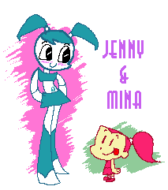

(日記とか言うモノ)
普通にやってたらそうでもないのに、直接見れないから、妄想ばっかりが膨らんで気になってしょうがないものってありますよね。ジョイフルのPpGグッズやCMなんかもそう。（思春期の男子の妄想も似たようなものか・・・）
TEEN TITANSもそう。あれが普通に日本アニメとして流れてたらこんなにも気になるものではなかったんじゃないだろうか。不思議です。あの日本アニメっぽい表現には日本人がみると屈折したおもしろさがあるのではないだろうか？いわばエミュレーターで別OSを使ったりするのと同じで、別環境で再現すること自体におもしろみを感じるみたいなもの。・・・などと、いいわけめいたことばかり考えたりする。
まあ、なんちゅうか、最近TEEN TITANSのサイトの格ゲーをやってたりするんですがね。JINX目当てで最初はやってたんだが、一応全キャラもそろったことだし、やりこんでみようかと思ってたんですが、いかんせんキーボード操作ではつらい・・そもそも格ゲー苦手だし。
どうしても最後のクレイフェイスもどきでつまってしまう。あと私にはレイブンが使いずらい。なんか、全キャラで全クリアすると「なにか現れる」みたいな噂があるんで気になってはいるんだが。クリアした人っていますかね。低レベルだとそう難しそうでもないので、ゲームパッドでもつなげてやってみるかなあ。（どっかに埋まってるので、発掘するのはめんどうなんだが）
それはそうと、実写版セーラームーン、キャストも決まったようで。ダレも知らないけど。ほほう10/4より毎週土曜7:30からですか。ん、あれ、この時間って聞き覚えが・・・・
カービィですか！カービィの後番ってことですか！カービィ・・・・
「ぎゃーす!!!!! キタキタキタキタキタ うぎゃーおおおおおおおおお」
「スカポン太どのが乱心めされた！ おちつきなされ、おちつきなされい」
「これが落ち着いてられるか〜〜〜〜！！
ビリー＆マンディ日本上陸で浮かれてる場合じゃない！！！
ジェニーがジェニーがああああああああああああああああ、 ぐはっ」
「だから落ち着きなされ。ジェニーとはどなたでござるか」
「だまれだまれいぃ！ジェニーと言えばXJ-9に決まってるじゃないかっ！
あのMy Life as a Teenage Robotがニコロデオンで8/1から単独シリーズとして放映開始されるんじゃ〜〜〜〜！
これが落ち着いてられるかぁぁぁぁ！！！！」
「My Life as Teenage Robotといえば、以前ニックのオーイェイカートゥーンで単発放映されたアレですかな」
「そう！ミーナと伯爵のRob Renzettiのロボッ娘ものだ！ 身体は鋼鉄でも中身はティーンエイジャーの女の子。日本のコビうってアンドロイド化して柔らかくなったロボッ娘たちと違って、硬い！重い！そしてあのデザイン。カートゥーンらしいギミックも魅力。のアレだ。いやー、あれ一本しかなくて、もったいないなあ、ミーナみたいにシリーズ化しないかなあと、思ってたらいきなりスピンオフかよっ！って感じでビックリよ。始まったばかりだが（正確にはまだ始まってないが）日本でも公開してもらえるよう、日本ニコロデオンにリクエストだ！・・・・・・ってアレ？」
「ニコロデオンの日本サイトはござらん」
「しょぼーん。まあいいや、ニックは本国で放映してるやつは日本でやってくれる率が高いから、まってりゃくるだろう・・・ あーあ、ついでにミーナと伯爵も単発シリーズ化してくれればいいのに・・・」
「あのう、スカポン太どの・・・実はその・・ここの記事を読むと「ミーナと伯爵」もすでにスピンオフしておられる様子・・」
「うぎゃっ！マジかよっ。しかも新作が8/2に！！あれっ？でもこれどの局でやってんの〜？？？？？ニックじゃないし。日本にいるこの身が恨めしい。」

ちょっと落ち着きました。泣いてもわめいても、日本に来るのは当分先だろうし、日本にいる以上みることもかなわんので、ひとまずは我慢、我慢と。
ところで、やっぱりというか当然というか、でますね、アニメイテッドTeen
Titansコミック。一応買ってみようかなあ・・・なになに、11/26発売か。やっぱりゴスっ娘って言われてんのねJINXってば(笑)
ペンシラーはTodd Nauckかあ。どっかで聞いたことあると思ったら、ヤングジャスティスも描いてたっけ。流れとしてはまあ、自然か。でまあ、Todd Nauckのサイト覗いてみると・・・・
ぎゃあーTodd Nauckってばガールズも描いてるよ！！（ファンアートだけどね）
Todd Nauckのサイトから「markers」へGO!
さあ、いよいよ「ビリー＆マンディ」が始まるね。週末が楽しみです。
別名「マンディ最強伝説」。
なんちゅうかね、ほんと最強なのよ。死に神を手なずけたとこからしてそうなんだが、脳味噌喰い宇宙人が出てきた時の話なんか、マジそれを確信したね。そう、スーパーパワーなんか持っていなくとも、強いものは強いのです。
そういえば、ティーンタイタンズもジャスティスリーグと同じで、ロビンだけ生身の人間・・・・
バットマン系の人たちはタフだよなあ。
スーパーヒーローといえば、新作続きでゴーストやらターガンやらゴームズやらスーパースリーやら古いスーパーヒーローたちはすっかりどっかいっちゃったねえ。残ったのはUバード・・・なぜ？
そういや、忘れてたけど、ドイツでも「ANIMAGIC2003」がやってたんだっけ。やっぱ夏は世界のあちこちでもイベントが多いねえ。さすがにドイツ語はよくわからんから、フランクフルト便りでも覗いてみっか。げはっ！ドイツ人の佐為がいるよっ。
ネットには絵日記というかマンガで日記を書くという強者がいたりします。そーいう方々がオフにいかれると、オフレポマンガと称して、オフ会の内容をマンガにしてたりします。これが、まるで知らない人たちの話なのにけっこうおもしろい。ああいうのもいいなあ・・と前から思っていたので、挑戦してみました。
一応、マンガを早く描く練習も兼ねて。マンガ描きたくても慣れてないせいか酷く時間がかかります。ただでさえ時間がないので、早くかけるようになりたいなあといつも思っているのです。美術でいうところのクロッキーみたいなもので、執筆速度優先でやってみました。かなりいいかげんなのはそのためです。（いいわけはこれくらいでいいかな？）見てみたい人はこちらへどうぞ＞26日カートゥーンメーリングリスト・オフレポマンガ
そういえば、渋谷で通り魔事件があったそうで。
その時間、わしがどこにいたかというと・・・・ちょうど渋谷駅じゃん！！！！ぞ〜
しかも、ちょうどその通りは知り合いの事務所があって、そちらに寄ろうかどうしようか迷ってた。あぶね〜。マジで。見たいTVがあったので、まあ週明けでいいや・・と、だらけた思考が幸をそうしたってことか・・・世の中ダメなやつほど長生きするのかもしれませぬ。適当にさぼるってことは、きっと大切なことなんだよ！（論理どっか間違ってるか？）
さて、それはともかく、今日はカートゥーンメーリングリストのオフ会に行ってきました。と、言っても、急な仕事がはいって夜の部のみの参加だったんですが・・・
なんだか、他の人もイロイロ都合があってキャンセルがあったようで、行ってみると・・あれ？どっかで見た方ばかり(笑)まあでも、収穫はあったし、お話は楽しかったので良かったです。これで、場所が居酒屋ではなくジョイフルだったら最高なんだけどなあ。そしたら恥ずかしげもなく、「お子さまランチ」を注文しましたとも、ええ！
やっぱりオフだとネットでは言えない本音トーク炸裂なんで楽しい。表に出せない裏話とか・・・
ビリー＆マンデー、コンテンツ作りたいけど、（たいしたことしてないが）これ以上手は広げられないので、だれか作って〜。必ず遊びにいきますから。
そーいや、ビックOの第二シーズンってスタッフロールが英語なのね。わかりにくいよっ！
レビューようやくアップ。最初はよかったけど、今じゃ1pに5コラムってのはちょっと重いかな〜とか思ってます。分割したほうがいいかな？
久々にガールズのモバイルサイト覗いてみたけど、そろそろ着メロもネタ切れっぽいかな。ファジーの声なんか需要あるんか？
待ち受け画面は日替わりってことでがんばってるよな〜。ネタはもつのか？と心配してるんだけど、シリーズ化してたりするのもあるので大丈夫か。
ブロッサムの星座シリーズはおもしろいね。
双子座＞ニセモノブロッサムとブロッサム にてねーよっ！！！
蟹座＞ブロの手がはさみに・・・・ってそれカレの手だよっ！！！
モバイルサイトといえば、閉鎖しちゃったカートゥーンモバイルサイトからメールが。アンケートに答えるとPpGの腕時計とか当たるみたい。アンケートってことは、そろそろ本格稼働の準備だろうか。
そういや9月からtripodがインフォシークに統合されるって話、すっかり忘れてたよ。
しばらくは転送されらしいけど、今年いっぱいで完全移行か。めんどくせー。
ていうか、嫌いなんだよなあインフォシークのサービスって。容量が50Mにってのはいいかもしんないけど、ポップアップに埋め込みのダブル広告。最悪。どっちみちURLが変わるってんなら、いっそのこと見捨てて移転だ。
と、いいつつ、なかなか移転しない私は、「かたずけられない症候群」。整理整頓とか片付けとか、区切りとかってダメなんだよ。ずう〜〜〜〜と、メリハリのないままだらりと生きることをついつい選んでしまうのです。そーいや私の人生も並にただようクラゲのように、すべて流れに身をまかせている。
だから記念日系とかには何の反応もなかったりします。やれクリスマスだ、正月だ、なんだーかんだーってあっても所詮、昨日の次の日、明日の前日ですよ。その日が大切なんじゃない。その瞬間が大切なんだ！（わけわからん）
あんまり密かに書いてるから見逃してたよ。
11月からゲンディのスターウォーズが日本でもやるんだって〜〜〜〜〜！！！！！！
えーと、これってまだ向こうでもやってなかったよね。まさか日米同時公開？最近の日本CNはとばしまくりだなあ。
このぶんじゃティーンタイタインズも意外に早くくるかも・・・ちょっと怖い気もするが。プロデューサーがティムだからそれほどハズしてるとは思えないけど。
ティーンタイタンズといえば、スターファイヤーのコンテンツも追加されたようだ。秘密のスクラップブック？しかし、このノリは・・・
しかし、こうなったら本家のバットマンもだまっちゃいない。バットマンのDVD用映画の新作がコミコンで上映されたもよう。DVD発売は10月21日か。「MYSTERY OF THE BATWOMAN」
えーとバットガールじゃなくてバットウーマン？全身ゴムタイツですか。体によくないぞお。ていうかビヨンドのほうかと思った。もしくはキャットウーマンみたい。あんまこういうボンテージ系って好きじゃないんだよなあ。だからキャットウーマンもイマイチ好みじゃないんだよね。バットガールとかアイビーのほうがまだ・・・とりあえず、Jinxよりグッとはこなかった。
あ、そういえば、むこうじゃコミコンか。日本の夏にコミケあれば、アメリカの夏はコミコンありってか。今年もフィルモイとかDCのブースに来てたりしたんだろうか？
フィルモイといえば、パワパフの新刊ゲットだぜ〜。今回はアメコミパロディ号でした(笑)スパイダーマンやらシルバーサーファーネタが！！ほかにもいっぱいてんこもり。最後にバブルスが、あわわわわ。どうしよ、これ。いちいち元ネタ解説してたら、えらいことになるな。買ったけど、ここの元ネタがわからないって人いる？
コミックス新刊まだ未入手。今回はかなりの奇作らしいので気になってはいるのだが。
それよか、今年のツールはえらいことになってるなあ。でも、アームストロングのブチキレアタック（火事場のくそ力か？）で、もう決まりか。今日はアンダルシアの夏がらみで高坂監督がゲストに登場！しかもパオパオジャージ姿で。
でも、監督！もっとしゃべってくだちゃい！
まあ、でも少しは裏話が聞けたかな。
この映画、ロードレース好きなら300％楽しめる。だってテレコムのザベルとかそのまんまなんだもの(笑)でも、日本人にはなじみのないロードレースなだけにヒットは微妙なとこだよなあ。しかーし！これで少しでもロードレースに感心が集まってくれれば・・・せめてサッカー並の知名度をもてば・・・少しは日常お話できるようになるかなあ・・と期待はしてるんだが。一応少年チャンピオンではマンガやってるしね。（まあ名作はシャカリキ！だが）
なにげに、スカパーのおかげで、日本は大ロードレースを世界で一番見れる国だったりするんですけどね。でも、フランスなんかは、玄関あけるともうそこで世界の大レースが眼前で展開。うらやましい。
ジェフリーキャット。良くも悪くもカートゥーンカートゥーンショウ作品って感じで、すまん、感想は・・「普通」だ。
レンとスティンピーの新作があちらでは公開されてるんだけど、あ〜こりゃきわどすぎ。これじゃ日本に入ってこないよ〜〜。ニコロデオンは「アニメチャンネル」じゃなくて「子供チャンネル」をうたってるので、絶対ムリだろう。可能性あるとすれば・・・・AXNか！ここはTNNのドラマVIPも流してるし、なにより「サウスパーク」やってるとこ。ここならば、もしかして！
で、ついでにTNNのアニメを見てみると・・噂のStripperella、静止画でみるといわゆるアメコミ的な「濃い」絵柄なんでちょっと引き気味なんだが、ビデオクリップみてみると、けっこういいじゃない！「アニメ」とはまさに「アニマ」を吹き込むことというのを実感。あちらの規制もあってか、きわどいとこでのスン止めがいい感じ。「チラリズムがわかってない！」とのつっこみもあった、この作品だけど、いいんじゃないでしょうかねえ。まあ、日本のヲタだと「乳ゆれが足りない！」とかつっこむのかな？(笑)（わしもけっこう毒されてきたなあ）
ついでに「GRAY the RAT」だけど、こちらはウエットにとんだ会話で魅せるタイプのアニメか？他は人間なのに、なんでこいつだけネズミ？ミッキーはマウスだけど、こいつはラットなのね。そのへんもこだわりか？しかし、これって最近はやりのFlashアニメかね。あの均等な線は間違いないな。
ところで、最近ネットが激重。これが夏休み効果ってやつなのか？学生諸君、ネットなんかで引きこもってないで、外で遊べ〜。
カートゥーンカートゥーンウィークエンドを見た。
まずはガールズ2時間てんこもりから。いきなりダイナモかあ。やっぱこれ好きだなあ。
久々にまとめてガールズを見たわけだが、初期のころの作画っていいなあ・・と思った。だんだんデザインちっくになってシャープになってゆくんだけど（その到達点が映画デザインか）、初期のころって、作画がゆるくて、それがいいんだよなあ。逆に表情や動きとかが今見ると「こんなんアリかよ！」というくらい自由。
久々に見ると、なんかプリンセスが妙にかわいく見えた。高笑いするプリンセスより、「だめー」とか言って困ったりするとこがイイ。そういや、ホームムービーズでも「いやー、やめてよー」と言うメリッサが大好きだす！どうした、わし？
で、おまけのLOW BROWなんだが・・・
これって、（米CNでだと思うが）来年レギュラー放送が予定されてるって話じゃないですか。でも、つまんなかった。なんちゅうかなあ、こんなもん？てな感じ。アオリ文句みると「自称おたくの米クリエイターが日本のおたく仲間に贈る、スーパーロボットアニメ。」とあるじゃない。でも、わしはヲタクじゃない（多分・・・）からかもしれないが、これ見てピンときたかね？ヲタクの方々？どうよ？（失礼な言い方だな）
わずかに「胸からヤマトの波動砲」ってのは笑ったけど、でもそれほどたいしたネタじゃない。敵はクランゲ皇帝だし(笑)
せめて、無口な人造少女とか出さないとダメちゃうか？ヲタ狙いってことならって意味だが。まあ、日本ヲタアニメを目指すことはないと思うけど、インスパイアされながらも独自の方向へ進化していったアメリカンロボヲタアニメってのを見たかった。
「忙しい」ネタは自分があとから読んでつらくなるので、もうなるべく書くのはよそう。
で、ようやくCNの8月の番組紹介を見ると・・・
うん、うん、ちゃんとビリマンの情報が載ってる。っていきなりくそ忍者で15日はなしかよ。で、そのninjaは「トップをねらえ！」かよ〜。
「トップをねらえ！」といえば、スーパーロボット大戦αではお世話になったなあ。ノーマルプレイでは思い入れなんかなかったから、まったく使わなかったんだけど、「女性キャラだけでクリアする【限定プレイ】」では重宝した。なにしろ、ヘビー級のスーパーロボットたちって女性キャラで扱えるものってほとんどないんだもの。
序盤はさやかマジンガーや、銀鈴ロボが大活躍(笑)このプレイはけっこうおもしろかったなあ。
他にも、「スーパー系のみ」や「オカルト系（ダンバインやライディーン）のみ」とかでやったけどこれが一番だったかな。組み合わせの妙とかいろいろ楽しめたし。一番辛かったのは、アフロダイAのみで使徒を倒したときか・・・スーパー系のみは序盤が苦しかったけど、スーパーのみに資金注入してゆくと逆に後半が楽勝に・・
ああ、スパロボまたやりたくなった・・・けど、時間はないなあ。
クルテク・・・ちょっと気になるね。チェコといえば人形アニメだけど、セルアニメもあったんだ〜。
それにしても、ここんとこのCNの新作ラッシュはすごいな。猫、犬、豹などメジャー級も完備。さらに獣や双子やミイラなども追加。さらには8月に死神とモグラか。おかげで宇宙怪人やら宇宙忍者やらはすっとばされてしましましたな。でも鳥人だけしぶとく残ってるのはなんでじゃろ〜？
ビリマン毎週（金）のみってのはうれしいところ。毎日放映されたら身が持たん。でも見逃した時用に、別の時間帯でもやっててくれると助かるんだが・・・他のチャンネルと比べ、CNの編成ってちょっとチェックしにくいとこがある。（私のリズムにとって・・・ってとこだけどさ）
帰ってきたらちょうど週刊少年「島本和彦」やってたので見る。
うわああ、この人イメージのまんまだよ！熱くしゃべりまくり！だんだんヒートアップしてゆく加減が手に取るようにわかる。
しかし、サイトだと代表作に「燃えるV」が載ってるのに、番組じゃまったくふれることなし。ないことになってんのか？(笑)まあ、本人も「やっちまった」だとマンガに描いてたしな。
そこで心を撃つ言葉が。
「あえて、寝る」
そうだよ、寝るのは逃げじゃなくて、勇気ある男らしい決断なんだよ！
よし、わしも！！！！！ しかしその後に・・・
「でも、寝たらお終いなんですけどね」
こっちのほうが説得力あって打ちのめされました・・・・・
でも、寝る。あえて寝る！男らしく寝る！・・といいつつ深夜4時。漢にはなれんなあ・・・
でも寝よう・・・でないと死んでしまうから・・・
さすがに三日寝てないと・・日中がまともに過ごせないものなあ
徹夜仕事にむけてドーピング中。買いだめしておいたユンケルもこれで最後なんで、次はリゲインでもためしてみるか。効果が切れたあとの反動がかなりあるって話だが。今さえしのげばそれでいいんじゃよ！
（嘘です。こんな生活いいかげんなんとかしたい・・・へんな時間に眠くなる、これってよくない兆候だよなあ）
とまあ、こんなこと書いてるヒマはないんだが、眠気覚ましにゃ現実逃避が一番。煮詰まった頭をリフレッシュ！溜まったストレス発散！
そんな私に嬉しいことにPowerCandyのリエさんから暑中お見舞いのイラストメールが。
（ ´Д⊂ヽううう、疲れた心にはきくなあ。ありがと〜。
さあ、これで元気が出たので現実逃避がんばろう（あれ？）
いやね、最近ティーンタイタンズのフレーズが妙に耳にのこっちゃって・・・「てぃ〜ん タイタンズ！」ってやつ。なんか妙にきになるんだよなあ、ティーンタイタンズ。あれが日本アニメだったならそうでもなかったのかな？アメコミがあんなんなっちゃってるから妙に気になるのか？うーん？
だって、もともと、これこれだもの。
特に驚きはJINX。もともとは、こんなおかたなのに・・・それが、コレ(笑)なんかゴスっ娘みたくなっちゃって・・・（密かにお気に入り）てなわけで、衝動的にJINXを描いてみましたとさ。パワパフと関係ないのでしばらくしたら元にもどそーっと。
またカウンターがリセットされてる〜！。
Tripodのカウンターはもう信用しないぞ。ま、どうでもいいか。
お絵かきにしても、もの書きにしても、もっとスピードアップしたいなあ。考えすぎるのがいけないのか。単純に作業量が足りないだけって気がするが。
それにしても、そろそろ学生さんはお休みなのかな？（ていうかもう休みなのか？）
ああ、わしも今の仕事すぱっと全部切っちまってお休みすっかなあ〜。そうなったら、長すぎる夏休みになりそうで怖くて出来ませんが・・・
でも、いつかは必要な気がする。
なにもしなくていいときに、何をやるかでその人の資質が問われるって話は聞く。そんなものだろうか。
「ビリー＆マンディー」のCM もとい、カートゥーンカートゥーンウィークエンドのCMをやっと見れた。
うむ、確かに8月の本放送にむけ・・と言ってる。いまさら改めて「ヤッター！」
カートゥーンネットワークにおける「カートゥーン・カートゥーンズ」のカテゴリーとはなんぞや。というのを某所で話したのだが、そうしてみると、この「ビリー＆マンディー」てのは久々の「カートゥーン・カートゥーンズ」。ジャックは「カートゥーン・カートゥーンズ」じゃなかったんだよねえ。もちろんホムビも。カートゥーンカートゥーンウィークエンドにジャックがないことからもそれがわかる。（しかし、長いよ・・名称）
で、そこでおそるべき疑問が。
サバイバーのCMなんだが、そこでは「ハンナ・バーベラチーム」と「カートゥーン・カートゥーンズチーム」に分かれている。「カートゥーン・カートゥーンズチーム」にブロッサムやユースタス、ジョニー、マンダークらがいるのはわかるのだが・・・・なぜにブラック？
Space ghost Coast to CoastもしくはBrak showは「カートゥーン・カートゥーンズ」なのか〜〜？
それはともかく、カートゥーンのセリフには感慨ぶかいものが多い。
突貫カメくん：ダムダム「突貫、もう三日も寝てないんだよ」
パワパフ（夢みたい）：眠りの精「わしが欲しいのは、1休み、2休み、3休み、4休み！」
涙があふれて止まりません・・・・・
2003年7月11日 (金)「ビリー＆マンディー」なんだが、イマイチしっくりこないのはなんでか。
ずばり、タイトルのネーミングが悪い！（と、ワシは思う）
元々のグリム＆イーヴルのほうが断然かっこいい。まあ、グリム側のタイトルがThe Grim Adventures of Billy & Mandyなんだからしょーがないのかもしれないけど、「グリム」でいいじゃん！
略したら「ビリマン」。ダメたよ〜
ていうか、オリジナルタイトル長すぎ。（そもそもCartoonCartoonとかだって長い。されにこれにショーとかウィークエンドとかつくからやんなっちゃう）
映画とかでもやたら長いタイトルのやつとかあるけど、やっぱ短いほうがいいよな〜。タイトルは。英語とかただでさえスペル長くなるんだからさ。こればっかりはいただけない。Space ghost Coast to Coastだって十分長すぎ。せめてRとかSとかFとかZとか♯とか’とか（どっかーん とか にょ とかはどうかと思うが）意味不明でいいから短くしてくれ。アチラだと、新シリーズとかになると ニューアドベンチャー○○とか長いタイトルを付け足すからやんなっちゃう。その点、ビヨンドはいい感じだ。
こうしてみると、もしかしたら日本のもののほうがタイトルには凝ってるのかもしれない。と思う今日この頃。
自分はまだ確認してないんですが・・・カートゥーンカートゥーンウィークエンドのCMがカートゥーンネットワークで流れているそうですな。み、みたい！そのCM！
なにしろ、あのgrim&evilがやるうえに、８月から本放送らしいじゃないですか！！！！！
ｷﾀ━━━━━━(ﾟ∀ﾟ)━━━━━━ !!!!
来たか、ついに来たか・・・米CNのサイトで見て一目惚れしてから、見たこと無いのにチェックだけはいれていた、あの作品がついに・・・・・無感量である。ジーン。やっぱりCNモバイルサイトでgrim&evilの待ち受けが配信されてたのは、予告だったんだ〜〜〜。はっ、てことはSpace ghost Coast to Coastも！！（ないない）
でも、なんか「グリム＆マンディー」だか「ビリー＆マンディー」とかいう題らしい。なんでじゃ？（ビリーなんかどーでもいいのにな！）
うーむ、あれだ。このThe
Grim Adventures of Billy & Mandyとしてカップリング放映でなく、独立タイトルとして始まったことに連動してのことだと思う。って、ことはだ・・・・コンカルネ様は初めからなかったことになってしまわれたんでしょうか？はあああ？
うーむ、と思ってよーく調べてみると・・・・
New
Episodes! Evil Con Carne Fridays at 9:30 p.m. (e/p)
ニューエピソード？！ なんとイーブル・コンカルネとしてこちらも独立していたではありませんか！！
とりあえず、まずはグリムから日本本放送が始まり、 イーブル・コンカルネもそのうち・・・ってことでしょうか。うーん、こちらも楽しみ。
正確なことはわからないけど、デクスターやパワパフ、ジョニー、カウチキらが第一世代だとすると、ジャックやカーレッジなどが第二世代、そしていよいよカートゥーンカートゥーン第三世代らが続々登場！ってことなのかなあ。いずれはKidsNextDoorなんかも来るってことでOK? 年末あたりもまた動きがありそうなんで、目が離せないなあ。
「Craig は 2004年以降に公開予定の新作にとりかかっているらしい」との情報もそのころにはハッキリしてるかと思う。むーん、最近始まった双子のやつとかどーでもよくなってきた。
肝心のカートゥーンカートゥーンウィークエンドもショート系カートゥーンはすさまじいラインナップ。
あの！キャプテンスターディーもやるみたいじゃないですか（8/30、31）
ビリー＆マンディーは8/02、03。一緒にやる「プリンセス探偵」てのも気になる。
とにかく８月は熱いってこった！でもクール！ ついでにバットマンの未放映分もやってくらませんかねえ・・・特にTVシリーズ最終話のMAD LOVEみてえ。ファンとはどん欲なものだ。
あ、なんかしらんが、放送事故があったらしい。どーでもいい時間帯だから気が付かなかったが。
マキュアーン！シモーニ！がんばれゲロルシュタイナー！。ああっまた落車！
と、まあこの時期はツール・ド・フランスで頭いっぱい。お腹いっぱい。
あれ、なにげにカウンターが増えてる。ていうかメチャメチャ増えてるがな！
なんだ、もとにもどっただけか。まえに一応だしといたクレームがいまごろ・・・
でもなんか計算あってないような・・ま、いいか。
エログロキュートで有名な水野純子の「ファイヤーワークス」を読む。「ピュアトランス」とか「ヘンゼルとグレーテル」とかだと完成された世界だけど、これはあちこちに描き散らかした短編ものばかりを集めたものだから面白いな。ゲームマシーン夢子ちゃんとかオバカなノリがとても楽しい。ダメすぎるファミ助最高。
それにしても、水野純子が描く、スペースチャンネル５の「うらら」とか、トゥームレイダースの「ララ」とか、DOAの「レイファン」とかが見れるとは思わなかった。すっげえ初期のやつとかも見れるし、こりゃいい買い物をしたわ。
ツールが！ツールが始まったよ〜。今年は波乱の幕開け！ああもう、これが始まるとなにも手に付かなくなるから困ったものだ。生で毎日4時間くらい平気でやるから、見るほうも耐久レース。
さて今日もお絵かき。
せっかくだから星のカービィを見た記念ということで。
もう今週終わり。でも私の戦いはぜんぜん終わらない。いいかげんにしろー。
しっかしマズイよ、これはまずいよ。全然やりたいことやれないよ。ああああ。
それはともかく、「チェブラーシカ」って人形アニメのDVDをしばらく前に買ったんだが、これはいい。
うごきもスバラシイが、どこかもの悲しい音楽がいつまでも心に残る。とくにゲーナの歌が心に染み渡る。
それで、人形アニメに興味をもって「人形アニメーションの魅力」なる本を買ってみました。うーむ、けっこう見てみたいのいっぱいあるのお。中でもトルンカの作品は見てみたいと思った。幻想的でよさそうだ。
と、思ってたら、やるんか！トルンカ！
ああ、もうじきだ。もうじき始まる。
ツール・ド・フランスが！
これを見るために、去年スカパーにはいったと言っても過言ではない。カートゥーンネットワークはある意味おまけだった。7月はカートゥーンもおもしろそうなのいろいろやるみたいだけど、これ始まっちゃったら見てるヒマないや。
ジロもおもしろかったけど、やっぱツールが思い入れも深いぶんだけ一番だなあ。尊敬するインデュライン様の記録とならばせないためにも、だれかアームストロングをぶちのめしてくれえ。シモーニ、頼んだぞ。オンセにテレコム、今年は手駒がいいんだからがんばってくれや。
茄子ーアンダルシアの夏もやることだし、今年は自転車ブームがくるかなあ。来なくてもいいけど。世間が騒ごうがわしが見続けることにはかわりはないのだから。でも、話す相手がいないのはちょっとばかしさみしい。
今年はツール100周年。どんな騒ぎになっているか楽しみだ。
ああ、チャーリーズエンジェルもアニメに・・・・。
かつてのTVシリーズじゃなくて、映画のやつだな。イラストのほうはムリヤリ映画のキャラに似せようとしていて、ちょっと怖い。ていうか濃いなあ。アニメのほうはそれより薄味になってるけど。ティーンタイタンズを初めとする最近のアメリカンアニメは妙に日本チックになったるから、これはどうかと思ったけど、それなりにアメリカンテイストを残しているカンジ。
背景とかCGなせいか、なんかゲームの挿入ムービーみたいに見える。
今のチャーリーズエンジェルのポイントがよくわかるな。アクション、セクシー、そしてコスプレ（笑）しかし、米アニメでパンチラかよ。アニメになると髪の色分けがますます・・・ガールズと同じに・・
さて、今日もお絵かき練習だ。
ふと思ったんだが、このページにのっけてくと、どんどん重くなっていくことに気が付いた。だから、topに。サーバー容量も少ないことだし、ここでとっかえひっかえするかな。
エアマスターネタ。でも、実はコミックもってないので記憶をたよりに描いた。たしかこんなシーンあったはずだ。
またヘンなのやってるな、adultswim。
まさにキャプテン・ライチェスやミニストリーオブペインが主人公になったようなカートゥーンだ。げげ、プラスチックマンまでパロってやがる。
日本CNもtoonami枠なんかもういいから（バージョンアップしてるし・・）adultswim枠を作ってくれや。けっこうここに見たいものいっぱいある。高年齢者向けってことで別に字幕でもいいから。今はホームムービーズだけか。
それから、「椎名版パワー・パフ・ガールズ」と本人が言っていた「絶対可憐チルドレン」がやっと読めた。
んんー、どうなんだコレ？正直パワパフは連想しなかったな。まあ、モロじゃパクリになっちゃうから確かに、「椎名版」ってことなんだろうね。そもそもコメントよく読むと、結果的に3人組のスーパー少女ってことで「パワパフ」って言ってるだけみたいだから、読み方が間違ってるともいえる。でもね・・・
むしろこれは「椎名版グルーブスカッド」それぞれ能力が違うドタバタ三人娘で、エージェント。性格もパワパフよかこっちに近かったしな。
ああ、それにしてもエアマスターはおもしろい。地上波で欠かさず見てるアニメってコレだけだ。プロレス編はやっぱいいですなあ。崎山最高。
{kind=link}